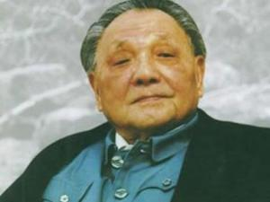

1、“改革是中国的第二次革命。这是一件很重要的必须做的事，尽管是有风险的事。”
2、“不管黑猫白猫，捉住老鼠就是好猫。”
3、“改革是中国发展生产力的必由之路。”
4、“改革开放胆子要大一些，敢于试验，不能像小脚女人一样。看准了的，就大胆地试，大胆地闯。”
5、“改革，应包括政治体制的改革。”
6、“思想更解放些改革步子更快些。”
关于发展1、“发展才是硬道理！”
2、“科学技术是第一生产力。”
3、“掌握新技术，要善于学习，更要善于创新。”
4、“解放思想，开动脑筋，实事求是。”
5、“尊重知识，尊重人才。”
6、“要创造一种环境，使拔尖人才能够脱颖而出。”
7、“一部分地区有条件先发展起来，先发展起来的地区带动后发展的地区，最终达到共同富裕。”
8、“绿化祖国，造福万代。”
关于国家1、“什么叫领导？领导就是服务。”
2、“中国要出问题，还是出在共产党内部。”
3、“在整个改革开放过程中都要反对腐败。”
4、“要全心全意为人民服务，深入群众倾听他们的呼声；要敢说真话，反对说假话，不务虚名，多做实事；要公私分明，不拿原则换人情；要任人唯贤，反对任人唯亲。”
5、“基本路线要管一百年，动摇不得。”
6、“实现四化，永不称霸。”
7、“一个国家，两种制度。”
8、“港人治港有个界线和标准，就是必须由以爱国者为主体的港人来治理香港。我们不要求他们都赞成中国的社会主义制度，只要求他们爱祖国，爱香港。”
9、“实现国家统一是民族的愿望。”
关于外交1、“冷静的观察，镇定自若的面对困难，捍卫我们的立场。韬光养晦，争取时间，永不称霸。”
2、“各国的事情，一定要尊重各国的党、各国的人民，由他们自己去寻找道路，去探索，去解决问题，不能由别的党充当老子党，去发号施令。我们反对人家对我们发号施令，我们也决不能对人家发号施令。这应该成为一条重要的原则。”
3、“中国是联合国安全理事会的常任理事国，中国理解自己的责任。有两条大家是信得过的，一条是坚持原则，一条是讲话算数。我们不搞政治游戏，不搞语言游戏。”
4、“中国的对外政策是一贯的，有三句话，第一句话是反对霸权主义，第二句话是维护世界和平，第三句话是加强同第三世界的团结和合作。”
5、“坦率地讲，主权问题不是一个可以讨论的问题。”